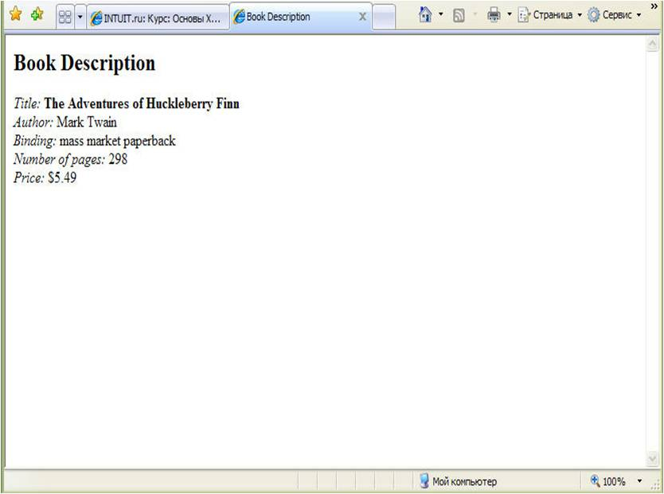
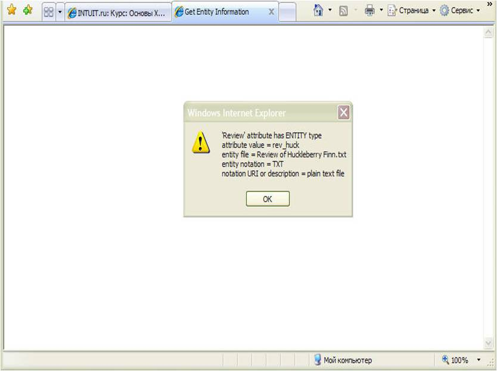

Лекция №9
|
Связывание XML-документа с
HTML-страницей Чтобы получить доступ к
XML-документу с использованием DOM, вы должны связать XML-документ с
HTML-страницей. Самый простой способ – сделать это через фрагмент данных.
Напомним, что фрагмент данных создается через HTML-элемент с именем XML.
Например, следующий элемент BODY HTML-страницы содержит фрагмент данных,
который связывает XML-документ, хранящийся в файле
Book.xml: <BODY> <XML
ID="dsoBook" SRC="Book.xml"></XML> <!-- другие элементы отображаемой части
страницы --> </BODY> Идентификатор ID,
который вы назначаете фрагменту данных, указывает на DSO документа. Вы
можете использовать составляющую XMLDocument DSO для доступа к DOM, как
показано в следующей строке кода сценария: Document =
dsoBook.XMLDocument; Член XMLDocument содержит
корневой объект DOM, известный как узел Документ (Document node). Вы
можете использовать узел Документ для доступа к другим объектам
DOM. Так, создание фрагмента
данных на HTML-странице предписывает Internet Explorer 5 создать как DSO
(представленный непосредственно через ID фрагмента данных), так и DOM
(доступ к которой осуществляется через член XMLDocument
DSO). Подсказка. Если вы хотите
иметь доступ к нескольким XML-документам с HTML-страницы, вы можете
поместить фрагмент данных для каждого из них. Кроме того, вы можете
включить несколько фрагментов данных для одного XML-документа.
Структура DOM В DOM программные объекты,
представляющие XML-документ, называются узлами. Когда Internet Explorer 5
обрабатывает связанный XML-документ и сохраняет его в DOM, он создает узел
для каждого из основных компонентов XML-документов, таких как элементы,
атрибуты и инструкции по обработке. DOM использует различные
типы узлов для представления различных типов компонентов XML. Например,
элемент хранится в узле Element, а атрибут – в узле Attribute. В таблице 9.1 представлены наиболее важные типы
узлов. Таблица
9.1
|
Вы можете получить каждое из имен
узлов (они приведены в третьем столбце) из свойства узла nodeName. Имена,
начинающиеся с символа #, представляют компоненты XML, не поименованные в
документе. (Например, комментарий в XML-документе не обладает именем. В связи с
этим DOM использует стандартное имя #comment.) Другие имена узлов получаются из
имен, присвоенных соответствующим компонентам в XML-документе. (Например, узел
Element, представляющий элемент типа BOOK, также должен носить имя
BOOK.)
Вы можете получить каждое из
значений узла (перечисленные в последнем столбце) из свойства узла nodeValue.
Если компонент XML имеет соответствующее значение (например, атрибут), это
значение будет храниться в значении узла. Если компонент XML не имеет значения
(например, элемент), DOM устанавливает в качестве значения узла null. Подробнее
о большинстве типов узлов, перечисленных в таблице 9.1, вы узнаете далее в этой
лекции.
DOM организует узлы XML-документа
в виде древообразной иерархической структуры, которая отражает иерархическую
структуру самого документа. При этом создается единственный узел Document,
который представляет весь XML-документ и служит корневым элементом в этой
иерархии. Заметим, что логическая иерархическая структура элементов XML, в
которой элемент Документ является корневым, это лишь одна из ветвей
иерархической структуры узлов DOM, которые представляют весь
документ.
Возьмем, например, XML-документ из
Листинга 9.1. Этот документ состоит из
объявления XML, комментария и корневого элемента, который включает дочерние
элементы, а также атрибуты. На рисунке 9.1 показана иерархическая организация
узлов, которые создает DOM для представления документа. Для каждого
компонента рассматриваемого документа на рисунке указан тип узла, используемого
для представления компонента (например, Document, Comment и Element), а также
имя узла (оно указано в скобках – например, #document, #comment и
INVENTORY).
Рис.
9.1.
Листинг 9.1. Inventory
Dom.xml
<?xml version="1.0"?>
<!-- Имя файла: Inventory Dom.xml
-->
<INVENTORY>
<BOOK
Binding="mass market paperback">
<TITLE>The Adventures of Huckleberry
Finn</TITLE>
<AUTHOR Born="1835">Mark Twain</AUTHOR>
<PAGES>298</PAGES>
<PRICE>$5.49</PRICE>
</BOOK>
<BOOK
Binding="trade paperback">
<TITLE>The Marble Faun</TITLE>
<AUTHOR Born="1804">Nathaniel
Hawthorne</AUTHOR>
<PAGES>473</PAGES>
<PRICE>$10.95</PRICE>
</BOOK>
<BOOK
Binding="hardcover">
<TITLE>Moby-Dick</TITLE>
<AUTHOR Born="1819">Herman
Melville</AUTHOR>
<PAGES>724</PAGES>
<PRICE>$9.95</PRICE>
</BOOK>
</INVENTORY>
Каждый узел, как программный
объект, имеет свойства и методы, которые позволяют вам осуществлять доступ,
отображать, обрабатывать и получать информацию о соответствующем компоненте XML.
Например, свойства nodeName и nodeValue (см. таблицу 9.1) дают имя компонента и его
значение.
Все типы узлов используют общий
набор свойств и методов. Эти свойства и методы разработаны для работы с узлами
вообще. В таблице 9.2 представлены некоторые наиболее
полезные свойства. Более подробную информацию и примеры использования
этих свойств вы найдете далее в этой лекции.
Таблица
9.2
Некоторые полезные свойства, поддерживаемые всеми типами
узлов
|
Описание |
Пример | |
|
1 |
2 |
3 |
|
Attributes |
Множество NamedNodeMap всех дочерних
узлов-атрибутов данного узла |
AttributeNode
= Element.attributes.getNamedItem («Binding»); |
|
childNodes |
Множество NodeList всех дочерних узлов, не
являющихся атрибутами, данного узла |
FirstNode = Element.childNodes
(0); |
|
dataType |
Тип данных этого узла приме-но только к опред-ным
типам узлов Attribute |
AttributeType =
Attribute.dataType; |
|
firstChild |
Первый дочерний узел данного узла, не являющийся
атрибутом |
FirstChildNode =
Element.firstChild; |
|
lastChild |
Последний дочерний узел данного узла, не
являющийся атрибутом |
LastChildNode =
Element.lastChild; |
|
nextSibling |
Следующий узел на том же уровне данного
узла |
NextElement =
Element.nextSibling; |
|
nodeName |
Имя данного узла |
ElementName =
Element.nodeName; |
|
nodeType |
Цифровой код, указывающий на тип данного
узла |
NodeTupeCode =
Node.nodeType; |
|
nodeTypeString |
Строка, содержащая тип данного узла, строчными
буквами (например, «element» или «attribute») |
NodeTypeString =
Node.nodeTypeString; |
|
nodeValue |
Значение данного узла (или null, если он не
содержит значения) |
AttributeValue =
Attribute.nodeValue; |
|
ownerDocument |
Корневой узел Document документа, содержащего
данный узел |
Document =
Node.ownerDocument; |
|
parentNode |
Узел, для которого данный узел является дочерним
(не действует для узла Attribute) |
ParentElement =
Element.parentNode; |
|
previousSibling |
Предыдущий узел на том же уровне данного
узла |
PreviousElement =
Element.previousSibling; |
|
text |
Все текстовое содержимое данного узла и все
подчиненные узлы Element |
AllCharacterData =
Element.text; |
|
xml |
Все содержимое XML данного узла и все его
подчиненные узлы |
XMLContent =
Element.xml; |
Подсказка. Если
вы хотите познакомиться со всеми свойствами, методами и событиями,
принадлежащими различным типам объектов-узлов, обратитесь к следующей
Web-странице, предоставленной MSDN:
http://msdn.microsoft.com/xml/reference/scriptref/xmldom_Objects.asp.
Обратите внимание, что на этой
странице каждому имени узла, которые приведены в Таблице 9.1, предшествует префикс XMLDOM
– например, XMLDOMDocument, XMLDOMElement и XMLDOMText. (Это имена программных
интерфейсов для каждого типа узла.) Обратите внимание также, что общие свойства
и методы узлов представлены под именем XMLDOMNode.
Помимо общих свойств и методов,
каждому типу узла присущи дополнительные свойства и методы, разработанные для
работы с определенным XML-компонентом, который представляет узел. Например, узел
Document имеет свойство parseError, которое содержит информацию о любой ошибке,
возникающей в процессе обработки документа. Данное свойство присуще только узлу
Document. Далее в этой лекции вы познакомитесь с таблицей 9.3, в которой представлены
наиболее полезные свойства и методы для некоторых типов
узлов.
Подсказка.
Свойство будет иметь значение null, если данное свойство не применимо к
определенному узлу. Например, если узел представляет XML-компонент, который не
имеет атрибутов (например, узел Document или Comment), его свойство attributes
будет иметь значение null. Если узел представляет XML-компонент, который не
имеет типа данных (тип данных имеют только определенные атрибуты), его свойство
dataType будет иметь значение null. Если узел не имеет дочернего узла, не
являющегося атрибутом, его свойство firstChild будет иметь значение null. Если
узел относится к типу, который не имеет значений (например, узел Document или
Element), его свойство nodeValue также будет иметь значение
null
Обратите внимание в таблице 9.2, что каждый узел обладает набором
свойств, которые позволяют вам перемещаться в иерархии узла – т. е. получать
доступ к другим узлам от текущего узла. Например, рассмотрим документ из Листинга 9.1. Если переменная Document
содержит корневой узел Document, следующий код приведет к отображению
содержимого комментария, расположенного в начале документа (этот комментарий DOM
хранит как второй дочерний узел узла Document):
alert
(Document.childNodes(1).nodeValue);
Эта строка вызовет отображение
сообщения, содержащего текст «Имя файла: Inventory
Dom.xml».
В предыдущем разделе вы узнали,
как осуществлять доступ к корневому узлу Document через член XMLDocument DSO,
который получается из фрагмента данных XML. Узел Document является шлюзом к
XML-документу. Вы можете использовать его для доступа к другим узлам. В
последующих разделах вы познакомитесь с особыми способами доступа к
узлам.
Доступ и
отображение элементов XML-документа
В этом разделе вы познакомитесь с
основными приемами использования HTML-страницы и DOM для отображения элементов
XML-документа.
Листинг 9.2.
Book.xml
<?xml version="1.0"?>
<!-- Имя файла: Book.xml
-->
<BOOK>
<TITLE>The
Adventures of Huckleberry Finn</TITLE>
<AUTHOR>Mark Twain</AUTHOR>
<BINDING>mass market
paperback</BINDING>
<PAGES>298</PAGES>
<PRICE>$5.49</PRICE>
</BOOK>
Листинг 9.3. DomDemo
Fixed.htm
!-- Имя файла: DomDemo Fixed.htm
-->
<HTML>
<HEAD>
<TITLE>Book
Description</TITLE>
<SCRIPT
LANGUAGE="JavaScript" FOR="window" EVENT="ONLOAD">
Document = dsoBook.XMLDocument;
title.innerText=
Document.documentElement.childNodes(0).text;
author.innerText=
Document.documentElement.childNodes(1).text;
binding.innerText=
Document.documentElement.childNodes(2).text;
pages.innerText=
Document.documentElement.childNodes(3).text;
price.innerText=
Document.documentElement.childNodes(4).text;
</SCRIPT>
</HEAD>
<BODY>
<XML
ID="dsoBook" SRC="Book.xml"></XML>
<H2>Book
Description</H2>
<SPAN
STYLE="font-style:italic">Title: </SPAN>
<SPAN
ID="title" STYLE="font-weight:bold"></SPAN>
<BR>
<SPAN
STYLE="font-style:italic">Author: </SPAN>
<SPAN
ID="author"></SPAN>
<BR>
<SPAN
STYLE="font-style:italic">Binding: </SPAN>
<SPAN
ID="binding"></SPAN>
<BR>
<SPAN
STYLE="font-style:italic">Number of pages:
</SPAN>
<SPAN
ID="pages"></SPAN>
<BR>
<SPAN
STYLE="font-style:italic">Price: </SPAN>
<SPAN
ID="price"></SPAN>
</BODY>
</HTML>
Листинг 9.2 содержит простой XML-документ,
который описывает одну книгу. Его корневой элемент, BOOK, содержит пять дочерних
элементов (TITLE, AUTHOR, BINDING, PAGES и PRICE), каждый из которых содержит
символьные данные, описывающие характеристики книги.
Листинг 9.3 содержит HTML-страницу, которая отображает содержимое каждого из
дочерних элементов в XML-документе.

Рис. 9.2.
XML-документ связан со страницей
через следующий фрагмент данных:
<XML ID="dsoBook"
SRC="Book.xml></XML>
Страница отображает XML-документ
посредством следующего блока кода сценария, который содержится в элементе HEAD
страницы:
<SCRIPT LANGUAGE="JavaScript" FOR="window"
EVENT="ONLOAD">
Document =
dsoBook.XMLDocument;
title.innerText=
Document.documentElement.childNodes(0)text;
author.innerText=
Document.documentElement.childNodes(1)text;
binding.innerText=
Document.documentElement.childNodes(2)text;
pages.innerText=
Document.documentElement.childNodes(3)text;
price.innerText=
Document.documentElement.childNodes(4)text;
</SCRIPT>
Установки атрибутов FOR=
«window» и EVENT= «ONLOAD» предписывают браузеру выполнять код из элемента
SCRIPT при первом открытии окна страницы до того, как будет отображено
содержимое страницы.
Сценарий первым делом получает
узел Document, который представляет весь документ и формирует корневой элемент
иерархии узлов DOM. Он делает это через член XMLDocument DSO, как было описано
ранее в этой лекции:
Document =
dsoBook.XMLDocument;
Далее сценарий получает доступ и
отображает символьные данные, содержащиеся в каждом из дочерних элементов
корневого элемента (TITLE, AUTHOR, BINDING, PAGES и PRICE). Например, он
отображает содержимое первого дочернего элемента (TITLE) следующим
образом:
title.innerText=
Document.documentElement.childNodes(0).text;
Вот пояснение выражения,
стоящего справа от знака равенства.
Document содержит узел Document в
основании (корне) иерархии узлов DOM.
documentElement представляет собой
свойство узла Document. Оно содержит узел Element, представляющий корневой
элемент XML-документа – в нашем примере, BOOK.
Примечание.
Свойство documentElement является одним из специфических для конкретного узла
свойств, предоставляемых узлом типа Document. В таблице 9.3 представлены другие полезные
свойства, а также методы, относящиеся к узлу Document. Имейте в виду, что для
узла Document вы можете использовать и общие свойства узлов, представленные в таблице 9.2.
childNodes является
свойством узла Element для корневого элемента. Оно содержит множество всех
дочерних узлов корневого узла Element, не являющихся атрибутами. В нашем примере
оно содержит узлы Element для пяти дочерних XML-элементов: TITLE, AUTHOR,
BINDING, PAGES и PRICE. Выражение childNodes(0) ссылается на первый из этих
дочерних узлов (а именно, на элемент TITLE).
Примечание. В рассматриваемом примере страницы (Листинг 9.3) вы можете использовать выражение
Document.childNodes(2), чтобы получить
доступ к узлу корневого элемента. Однако преимущество использования свойства
documentElement узла Document заключается в том, что его значение не зависит от
положения корневого элемента внутри XML-документа. Например, если бы вы удалили
комментарий в начале документа, либо если бы добавили объявление типа документа,
выражение Document.childNodes(2) больше не представляло бы корневой
элемент.
text является свойством узла,
возвращаемого выражением childNodes(0). Оно предоставляет весь текст,
содержащийся в этом узле, а также текст, принадлежащий любому подчиненному узлу
Element. В нашем примере TITLE не имеет подчиненных элементов, поэтому свойство
text содержит только собственно текст элемента TITLE, «The Adventures of
Huckleberry Finn».>
Примечание.
Свойства childNodes и text относятся к общим свойствам
узлов.
Таблица
9.3
|
Свойство узла
Document |
Описание |
Пример |
|
|
|
|
|
Doctype |
Узел DocumentType, представ-щий объявление типа
документа |
DocumentType =
Document.doctype; |
|
documentElement |
Узел Element, представ-щий корневой
элемент |
RootElement =
Document.documentElement; |
|
ondataavailable |
Если вы присвоите этому сво-ву имя ф-ии, которую
вы написали, ф-ия будет вызываться в момент доступности данных
XML |
Document.ondataavailable = MyDataAvailableHandler;
|
|
onreadystatechange |
Если вы присвоите этому свойству имя ф-ии, которую
вы написали, ф-ия будет выз-ться всякий раз, когда изме-тся сво-во
readyState узла Document. |
Document.onreadystatechange = MyReadyStateHandler;
(Ф-ия MyReadyStateHandler будет вызываться всякий раз при изменении
свойства readyState узла Document) |
|
parseError |
Объект, который содержит информацию о любых
ошибках, которые возникают в процессе обработки
документа |
ErrorCode =
Document.parseError.errorCode; |
|
readyState |
Текущий статус загрузки и обработки XML-документа.
Может принимать одно из следующих числовых значений:
0: не инициализирован 1: загружается 2: загружен 3: интерактивный режим 4: завершение |
if (Document.readyState == 4) /* обработка данных…
*/ |
|
url |
URL XML-документа |
URL = Document.url; |
|
getElementsByTagName
(type-name) |
Возвращает множество NodeList всех эл-ов в док-те,
которые имеют заданное имя типа. Если указано «*», возвращает все
эл-ты |
AuthorElementCollection =
Document.getElementsByTagName («AUTHOR»); |
|
NodeFromID (id-value) |
Возвращает узел, представ-щий эл-нт, чей атрибут
типа ID имеет указанное значение. |
Element = Document.nodeFromID
(«S021»); |
Символьные данные элемента TITLE,
которые получены из выражения справа от знака равенства («The Adventures of
Huckleberry Finn») присваиваются свойству innerText HTML-элемента SPAN, имеющему
идентификатор title:
title.innerText=Document.documentElement.childNodes(0).text;
Этот элемента SPAN определен
внутри элемента BODY HTML-страницы следующим образом:
<SPAN ID="title"
STYLE="font-weight:bold"></SPAN>
Присвоение символьных данных
свойству innerText элемента SPAN приводит к тому, что элемент SPAN отображает
текст с использованием формата, определенного в его начальном теге
(font-weight:bold).
Подсказка. В
Dynamic HTML (DHTML), который поддерживает Internet Explorer 5, каждый
HTML-элемент имеет набор свойств, которые вы можете использовать для установки
или получения различных характеристик элемента через код сценария. Свойство
innerText устанавливает или получает текстовое содержимое элемента.
Использование
объекта NodeList
Свойство childNodes узла содержит
набор дочерних узлов текущего узла, не являющихся атрибутами. (Доступ к дочерним
узлам-атрибутам осуществляется через свойство attribute узла.) Определенный тип
набора, который содержит свойство childNodes, носит название объекта
NodeList.
Чтобы извлечь определенный
дочерний узел из объекта NodeList, вы можете обратиться к его методу item,
указав при этом индекс дочернего узла, который вы хотите получить (индексы
отсчитываются с нуля). Например, обращение к следующему методу позволяет
получить первый дочерний узел, принадлежащий узлу Element:
FirstNode =
Element.childNodes.item(0);
Однако, поскольку item является
методом по умолчанию объекта NodeList, вы можете опустить его, как это делалось
в предыдущих примерах в этой лекции:
FirstNode =
Element.childNodes(0);
В таблице 9.4 представлены свойства и методы,
предоставляемые объектом NodeList.
Таблица
9.4
Свойство и методы, поддерживаемые групповым объектом
NodeList. Доступ к объекту NodeList осуществляется через свойство childNodes
узла
|
Описание |
Пример | |
|
length |
Количество узлов, содержащихся в
наборе |
NodeCount =
Element.childNodes.length; |
|
Метод NodeList |
Описание |
Пример |
|
item (индекс, отсчитываемый с 0) (метод по
умолчанию) |
Возвращает узел в соответствии с заданным вами
индексом, при этом 0 соответствует первому узлу |
SecondChild =
Element.childNodes.item (1); или SecondChild
= Element.childNodes (1); |
|
reset() |
Устанавливает внутренний указатель на позицию
перед первым узлом в наборе, чтобы последующий вызов nextNode возвращал
первый узел |
Element.childNodes.reset
(); |
|
nextNode () |
Возвращает следующий узел в наборе в соответствии
с позицией внутреннего указателя |
Element.childNodes.reset (); FirstNode =
Element.childNodes.nextNode
(); |
Извлечение
символьных данных элемента
В сценарии, представленном в Листинге 9.3, свойство text каждого из дочерних
элементов (TITLE, AUTHOR, BINDING, PAGES и PRICE) используется для получения
символьных данных элемента. Например, следующий оператор используется для
извлечения символьных данных элемента TITLE:
title.innerText=Document.documentElement.childNodes(0).text;
Свойство text показывает
содержимое элемента в текущем узле, плюс текстовое содержимое любого
подчиненного элемента. Оно хорошо подходит для извлечения символьных данных
элемента в том случае, если элемент не имеет дочерних элементов (например,
элемент TITLE). Однако если элемент содержит один или более дочерних элементов
помимо символьных данных, как в приведенном ниже примере, свойство text
возвращает весь текст (в данном случае, «Moby-Dick Or, the
Whale»).
<TITLE>Moby-Dick
<SUBTITLE>Or, the
Whale</SUBTITLE>
</TITLE>
Чтобы получить только символьные
данные элемента TITLE, вам потребуется осуществить доступ к дочернему узлу
Text.
Как видно из таблицы 9.1, свойство nodeValue узла Element имеет
значение null. Если элемент содержит символьные данные, то они хранятся в
дочернем узле Text, и вы можете получить их через свойство nodeValue узла Text.
Например, чтобы получить данные элемента TITLE («Moby-Dick»), из предыдущего
примера, без символьных данных, принадлежащих элементу SUBTITLE, используем
следующее выражение:
Element.firstChild.nodeValue
(Поскольку символьные данные
элемента TITLE предшествуют подчиненному элементу, они представляются первым
дочерним узлом, и вы можете извлечь их с помощью свойства
firstChild.)
Если символьные данные элемента
смешаны с дочерними элементами, комментариями или инструкциями по обработке,
каждый отдельный блок символьных данных представляется собственным дочерним
узлом Text. Например, приведенный ниже элемент ITEM имеет три дочерних узла,
расположенных в следующем порядке: узел TEXT, представляющий первый блок
символьных данных; узел ELEMENT, представляющий дочерний элемент SUB-ITEM; еще
один узел TEXT, представляющий второй блок символьных
данных:
<ITEM>
блок символьных данных № 1 /* узел TEXT
*/
<SUB-ITEM>текст подчиненного
элемента</SUB-ITEM>
блок символьных данных № 2
/* узел TEXT */
</ITEM>
Метод и свойство, предоставляемые узлом Text, приведены в таблице 9.5.
Таблица
9.5
Полезные свойство и метод, поддерживаемые узлами
Text
|
Описание |
Пример | |
|
Length |
Количество символов в тексте
узла |
CharacterCount =
Text.length; |
|
substringData
(char-offset, num-chars) |
Возвращает строку, содержащую заданное число
символов из текстового содержимого узла, начиная с указанной параметром
смещения позиции |
Substring = Text.substringData (2, 3);
(Возвращает третий, четвертый и пятый символы из
содержимого элемента
Text) |
Отображение
переменного числа XML-элементов
Итак, вы теперь знаете, как
отобразить XML-документ, имеющий известное число элементов. Если документ имеет
неизвестное число элементов, использование DOM для отображения документа
несколько усложняется.
Например, для XML-документа типа
Inventory.xml или Inventory Big.xml вы обычно не знаете заранее, сколько
элементов BOOK содержит документ.
В Листинге 9.4 представлена HTML-страница, которая
использует DOM для отображения документа Inventory.xml вне зависимости от того,
сколько элементов BOOK в нем содержится.

Рис. 9.3.
Листинг 9.4.
DomDemo Variable.htm
<!-- Имя файла: DomDemo
Variable.htm -->
<HTML>
<HEAD>
<TITLE>Book
Inventory</TITLE>
<SCRIPT
LANGUAGE="JavaScript" FOR="window" EVENT="ONLOAD">
HTMLCode = "";
Document = dsoInventory.XMLDocument;
for (i=0;
i < Document.documentElement.childNodes.length;
i++)
{HTMLCode +=
"<SPAN STYLE='font-style:italic'>Title:
</SPAN>"
+ Document.documentElement.childNodes(i).childNodes(0).text
+ "<BR>"
+ "<SPAN STYLE='font-style:italic'>Author:
</SPAN>"
+ Document.documentElement.childNodes(i).childNodes(1).text
+ "<BR>"
+ "<SPAN STYLE='font-style:italic'>Binding:
</SPAN>"
+ Document.documentElement.childNodes(i).childNodes(2).text
+ "<BR>"
+ "<SPAN STYLE='font-style:italic'>Number of pages:
"
+ "</SPAN>"
+
Document.documentElement.childNodes(i).childNodes(3).text
+ "<BR>"
+ "<SPAN STYLE='font-style:italic'>Price:
</SPAN>"
+ Document.documentElement.childNodes(i).childNodes(4).text
+ "<P>";
}
DisplayDIV.innerHTML=HTMLCode;
</SCRIPT>
</HEAD>
<BODY>
<XML
ID="dsoInventory" SRC="Inventory.xml"></XML>
<H2>Book
Inventory</H2>
<DIV ID="DisplayDIV"></DIV>
</BODY>
</HTML>
Сценарий в рассматриваемом примере
использует свойство length для определения количества элементов BOOK внутри
корневого элемента. (Свойство length является членом группового объекта
NodeList, предоставляемого свойством childNodes узла корневого элемента. См. таблицу 9.4.) В сценарии имеется цикл for, который
выполняется для каждого элемента BOOK и включает код для отображения каждого из
этих элементов:
for (i=0;
i <
Document.documentElement.childNodes.length;
i++)
{
/* код для отображения элемента BOOK…
*/
}
Поскольку количество элементов
BOOK неизвестно, страница не может использовать фиксированный набор элементов
SPAN в разделе BODY для отображения данных (как это делалось в предыдущем
примере из Листинга 9.3). Вместо этого для каждого элемента BOOK
сценарий динамически генерирует весь блок HTML-разметки, необходимый для
отображения элемента:
for (i=0;
i <
Document.documentElement.childNodes.length;
i++)
{
HTMLCode +=
"<SPAN STYLE='font-style:italic'>Title:
</SPAN>"
+
Document.documentElement.childNodes(i).childNodes(0).text
+ "<BR>"
+ "<SPAN STYLE='font-style:italic'>Author:
</SPAN>"
+
Document.documentElement.childNodes(i).childNodes(1).text
+ "<BR>"
+ "<SPAN STYLE='font-style:italic'>Binding:
</SPAN>"
+
Document.documentElement.childNodes(i).childNodes(2).text
+ "<BR>"
+ "<SPAN STYLE='font-style:italic'>Number of pages:
"
+ "</SPAN>"
+
Document.documentElement.childNodes(i).childNodes(3).text
+ "<BR>"
+ "<SPAN STYLE='font-style:italic'>Price:
</SPAN>"
+
Document.documentElement.childNodes(i).childNodes(4).text
+
"<P>";
}
Сценарий хранит все эти блоки
HTML-разметки в переменной HTMLCode. После цикла for, когда все блоки
сгенерированы и загружены в HTMLCode, сценарий присваивает HTML-разметку
свойству innerHTML элемента DIV раздела BODY страницы (этот элемент имеет ID
DisplayDIV):
DisplayDIV.innerHTML=HTMLCode;
Элемент DIV затем сразу же
получает HTML-разметку и отображает результаты. Чтобы убедиться, что страница
работала независимо от количества элементов BOOK, которое содержится в
XML-документе, вы можете отредактировать фрагмент данных на этой странице, чтобы
он отображал документ Inventory Big.xml, который содержит в два раза больше
элементов BOOK, чем документ Inventory.xml:
<XML ID="dsoInventory" SRC="Inventory
Big.xml"></XML>
Использование
других способов доступа к элементам
В рассмотренных примерах сценариев
доступ к узлам Element в иерархической структуре осуществлялся с использованием
свойств childNodes или firstChild узла. При этом происходил переход от одного
узла к другому. Аналогичным образом вы можете применять свойства узла lastChild,
previousSibling, nextSibling и parentNode (см. таблицу 9.2).
Примечание.
Свойства childNodes, firstChild и lastChild дают возможность доступа только к
дочерним узлам, которые не являются атрибутами, в то время как свойства
previousSibling и nextSibling могут быть использованы для доступа к вершинному
узлу любого типа.
Другим способом доступа к
XML-элементам является использование свойства getElementsByTagName, которое
позволяет извлечь все элементы, имеющие определенное имя типа (например, TITLE).
Этот метод может использоваться для узла Document (см. таблицу 9.3), а также для узла Element (см. таблицу 9.6). Если вы обращаетесь к методу для узла
Document, он возвращает набор узлов Element для всех элементов в документе,
обладающих заданным именем типа. Например, следующий оператор позволяет получить
группу узлов для всех элементов в документе, обладающих именем
BOOK:
NodeList =
Document.getElementsByTagName("BOOK");
Если вы обращаетесь к методу
getElementsByTagName для узла Element, как в следующем примере, он возвращает
набор узлов для всех соответствующих элементов, которые являются подчиненными
для узла Element:
NodeList =
Element.getElementsByTagName("AUTHOR");
Подсказка. Если в качестве параметра метода getElementsByTagName вы
укажете «*», то метод вернет набор узлов для всех элементов (всех элементов в
документе, если вы вызываете метод для объекта Document, и всех подчиненных
элементов, если вы вызываете метод для объекта Element).
Таблица
9.6
Полезные методы, поддерживаемые узлами
Element
|
Описание |
Пример | |
|
getAttribute (имя-атр) |
Возвращает значение атрибута элемента с заданным
именем |
AttValue = Element.getAttribute
(«InStock»); |
|
getAttributeNode(имя-атр) |
Возвращает узел Attribute, представляющий атрибут
элемента с заданным именем |
Attribute = Element.getAttributeNode
(«InStock»); |
|
getElementsByTagName
(имя-типа) |
Возвращает набор NodeList узлов Element для всех
подчиненных элементов элемента с заданным именем. Если указано «*»,
возвращает узлы для всех подчиненных элементов |
AuthorElementCollection =
Element.getElementsByTagName
(«AUTHOR»); |
Метод getElementsByTagName
предоставляет узлы Element в виде группового объекта NodeList. Доступ к
отдельным узлам осуществляется с помощью действий, описанных в разделе
«Использование объекта NodeList» ранее в этой лекции. Например, следующий код
отображает (в окне предупреждения) текстовое содержимое всех узлов Element в
объекте NodeList, возвращенное методом
getElementsByTagName:
for (i=0; i < NodeList.length; ++i)
alert (NodeList(i).text);
HTML-страница из Листинга 9.5 демонстрирует использование метода
getElementsByTagName для узла
Document. Страница отображает
поле ввода INPUT типа TEXT, которое дает вам возможность ввести имя элемента.
Когда вы щелкаете мышью на кнопке Show Elements, вызывается функция ShowElements
сценария, которая использует метод getElementsByTagName для узла Document, чтобы
найти и отобразить XML-разметку для всех элементов в документе, которые носят
введенное вами имя элемента (если они имеются). Заметим, что сценарий использует
свойство xml каждого из узлов Element для отображения содержимого XML-разметки
элемента. Страница изначально связана с документом Inventory.xml, хотя вы можете
отредактировать фрагмент данных, чтобы отобразить элементы из другого
XML-документа. На рисунке 9.4 показано как Internet Explorer 7 отобразит
страницу после того, как вы ввели в поле ввода INPUT имя AUTHOR и щелкнули мышью
на кнопке Show Elements.
Рис. 9.4.
Листинг 9.5. GetElements.htm
!-- Имя файла: GetElements.htm
-->
<HTML>
<HEAD>
<TITLE>Element Finder</TITLE>
<SCRIPT
LANGUAGE="JavaScript">
function ShowElements()
{
/* проверка ввода пользователем названия элемента в поле
'Element name': */
if (ElementName.value == "")
{
ResultDiv.innerText = "<You must enter an element "
+ "name into 'Element name' box.>";
return;
}
/* создание списка элементов NodeList с именами,
аналогичными
введенному: */
Document = dsoXML.XMLDocument;
NodeList =
Document.getElementsByTagName (ElementName.value);
/* запись XML указателя для каждого найденного
элемента
в ResultHTML: */
ResultHTML = "";
for (i=0; i < NodeList.length; ++i)
ResultHTML += NodeList(i).xml + "\n\n";
/* назначение сохраненных результатов в свойстве
innerText
элемента DIV: */
if (ResultHTML == "")
ResultDiv.innerText = "<no matching elements
found>";
else
ResultDiv.innerText = ResultHTML;
}
</SCRIPT>
</HEAD>
<BODY>
<XML
ID="dsoXML" SRC="Inventory.xml"></XML>
<H2>Find
Elements by Element Name</H2>
Element name:
<INPUT TYPE="TEXT" ID="ElementName"> 
<BUTTON
ONCLICK="ShowElements()">Show Elements</BUTTON>
<HR>
<DIV
ID=ResultDiv></DIV>
</BODY>
</HTML>
Доступ и
отображение значений атрибутов в XML-документе
Атрибут, который содержится в
XML-элементе, представляется дочерним узлом Attribute. Однако вы не сможете
обратиться к дочернему узлу Attribute с использованием свойств childNodes,
firstChild или lastChild, которые годятся для доступа к дочерним узлам других
типов. Вместо этого вам потребуется воспользоваться свойством attributes узла
Element.
Примечание. DOM
использует узлы Attribute для представления не только атрибутов, но и нескольких
типов других компонентов XML, которые состоят из пар имя-значение, а именно:
-
имя и значение в инструкции
по обработке (например, version=«1.0» в XML-объявлении);
-
ключевое слово SYSTEM, за
которым следует системный литерал в объявлении типа документа, объявлении
внешнего примитива, либо в объявлении нотации;
-
ключевое слово NDATA, за
которым следует имя нотации в объявлении не разбираемого
примитива.
Возьмем в качестве примера
XML-документ из Листинга 9.6.
Листинг 9.6. Inventory
Attributes.xml
<?xml version="1.0"?>
<!-- Имя файла: Inventory
Attributes.xml -->
<INVENTORY>
<BOOK
Binding="mass market paperback" InStock="yes"
Review="***">
<TITLE>The Adventures of Huckleberry
Finn</TITLE>
<AUTHOR Born="1835">Mark Twain</AUTHOR>
<PAGES>298</PAGES>
<PRICE>$5.49</PRICE>
</BOOK>
<BOOK
Binding="hardcover" InStock="no">
<TITLE>Leaves of Grass</TITLE>
<AUTHOR Born="1819">Walt
Whitman</AUTHOR>
<PAGES>462</PAGES>
<PRICE>$7.75</PRICE>
</BOOK>
<BOOK
Binding="mass market paperback" InStock="yes"
Review="****">
<TITLE>The Legend of Sleepy
Hollow</TITLE>
<AUTHOR>Washington Irving</AUTHOR>
<PAGES>98</PAGES>
<PRICE>$2.95</PRICE>
</BOOK>
</INVENTORY>
Элементы BOOK в этом документе
имеют от двух до трех атрибутов. Следующее выражение в сценарии получает узел
для первого элемента BOOK:
Document.documentElement.childNodes(0)
Свойство attributes данного узла
Element предоставляет набор NamedNodeMap узлов Attribute для всех атрибутов,
принадлежащих первому элементу BOOK:
NamedNodeMap=Document.documentElement.childNodes(0).attributes
Групповой объект NamedNodeMap
несколько отличается от группового объекта NodeList, предоставляемого свойством
узла childNodes. В таблице 9.7 приведены свойство и несколько полезных
методов, предоставляемых объектами NamedNodeMap.
Таблица
9.7
Свойство и некоторые полезные методы, предоставляемы
групповым объектом NamedNodeMap
|
Описание |
Пример | |
|
Length |
Количество узлов, содержащихся в
наборе |
AttributeCount =
Element.attributes.length; |
|
getNamedItem (имя-атр) |
Возвращает узел, который носит заданное
имя |
Attribute =
Element.attributes.getNamedItem («Binding»); |
|
item (индекс, отсчитываемый от нуля) (метод по
умолчанию) |
Возвращает узел в заданной индексом позиции (0
соответствует первому узлу) |
SecondAttribute = Element.attributes.item (1); или
SecondAttribute = Element.attributes (1); |
|
reset () |
Устанавливает внутренний указатель на позицию
перед первым узлом в наборе, так что последующий вызов nextNode возвращает
первый узел |
Element.attributes.reset
(); |
|
nextNode () |
Возвращает следующий узел в наборе в соответствии
со значением внутреннего указателя |
Element.attributes.reset (); FirstAttribute =
Element.attributes.nextNode
(); |
Вы можете воспользоваться
свойством length объекта NamedNodeMap и установленным по умолчанию методом item,
чтобы перемещаться внутри набора и извлекать отдельные узлы Attribute. Например,
следующий фрагмент сценария отображает имя и значение каждого атрибута для
первого элемента BOOK рассматриваемого документа:
NamedNodeMap=
Document.documentElement.childNodes(0).attributes;
for (i=0; i<NamedNodeMap.length; ++i)
alert ("node name: " +
NamedNodeMap(i).nodeName + "\n"
+ "node value: " +
NamedNodeMap(i).nodeValue);
Каждая пара имя-значение
отображается в окне сообщения-предупреждения.
Обратите внимание, что свойство
nodeName узла Attribute содержит имя атрибута, в то время как свойство nodeValue
содержит значение атрибута.
Примечание. В
действительности узел Attribute имеет дочерний узел Text, который содержит
значение атрибута. Однако этот узел практически не нужен, поскольку вы легко
можете получить значение атрибута из свойства nodeValue узла Attribute.
Вы можете извлечь определенный
узел Attribute из объекта NamedNodeMap, вызвав метод getNamedItem данного
объекта. Например, следующий фрагмент кода сценария отображает значение атрибута
Binding первого элемента BOOK в рассматриваемом документе:
NamedNodeMap =
Document.documentElement.childNodes(0).attributes;
alert
(NamedNodeMap.getNamedItem("Binding").nodeValue);
Доступ к
примитивам и нотациям XML
Вы используете объявление не
разбираемого примитива для включения в XML-документ внешних данных. (Все не
разбираемые примитивы являются общими внешними примитивами.) При использовании
не разбираемого примитива вы назначаете его имя атрибуту типа ENTITY или
ENTITIES, что ассоциирует файл внешнего примитива с определенным XML-элементом.
XML-процессор не имеет доступа к файлу не разбираемого примитива. Он просто
делает описание примитива и его нотацию доступными приложению, которое может
получать и соответствующим образом использовать
информацию.
В этом разделе вы познакомитесь с
XML-документом и HTML-страницей, которые демонстрируют основные этапы в
использовании DOM для извлечения из XML-документа информации о примитиве, а
также нотации, описывающей формат примитива. Листинг 9.7 содержит пример XML-документа, а Листинг 9.8 содержит пример HTML-страницы.
Листинг 9.7. Inventory
Entity.xml
<?xml version="1.0"?>
<!-- Имя файла: Inventory
Entity.xml -->
<!DOCTYPE INVENTORY
[
<!NOTATION TXT
SYSTEM "plain text file">
<!ENTITY
rev_huck SYSTEM "Review of Huckleberry Finn.txt"
NDATA TXT>
<!ENTITY
rev_leaves SYSTEM "Review of Leaves of Grass.txt"
NDATA TXT>
<!ENTITY
rev_legend SYSTEM "Review of Sleepy Hollow.txt"
NDATA TXT>
<!ELEMENT
INVENTORY (BOOK)*>
<!ELEMENT BOOK
(TITLE, AUTHOR, BINDING, PAGES, PRICE)>
<!ATTLIST
BOOK Review ENTITY
#IMPLIED>
<!ELEMENT
TITLE (#PCDATA)>
<!ELEMENT
AUTHOR (#PCDATA)>
<!ELEMENT
BINDING (#PCDATA)>
<!ELEMENT
PAGES (#PCDATA)>
<!ELEMENT
PRICE (#PCDATA)>
]
>
<INVENTORY>
<BOOK
Review="rev_huck">
<TITLE>The Adventures of
Huckleberry Finn</TITLE>
<AUTHOR>Mark Twain</AUTHOR>
<BINDING>mass market
paperback</BINDING>
<PAGES>298</PAGES>
<PRICE>$5.49</PRICE>
</BOOK>
<BOOK
Review="rev_leaves">
<TITLE>Leaves of Grass</TITLE>
<AUTHOR>Walt Whitman</AUTHOR>
<BINDING>hardcover</BINDING>
<PAGES>462</PAGES>
<PRICE>$7.75</PRICE>
</BOOK>
<BOOK
Review="rev_legend">
<TITLE>The Legend of Sleepy
Hollow</TITLE>
<AUTHOR>Washington Irving</AUTHOR>
<BINDING>mass market
paperback</BINDING>
<PAGES>98</PAGES>
<PRICE>$2.95</PRICE>
</BOOK>
</INVENTORY>
Листинг 9.8. Inventory
Entity.htm
<!-- Имя файла: Inventory
Entity.htm -->
<HTML>
<HEAD>
<TITLE>Get Entity Information</TITLE>
<SCRIPT
LANGUAGE="JavaScript" FOR="window" EVENT="ONLOAD">
Document = dsoInventory.XMLDocument;
Attribute =
Document.documentElement.childNodes(0).attributes(0);
if
(Attribute.dataType == "entity")
{
DisplayText = "'" + Attribute.nodeName
+ "'
attribute has ENTITY type" + "\n";
DisplayText += "attribute value = "
+
Attribute.nodeValue + "\n";
Entity =
Document.doctype.entities.getNamedItem(Attribute.nodeValue);
DisplayText += "entity file = "
+
Entity.attributes.getNamedItem("SYSTEM").nodeValue
+
"\n";
NotationName =
Entity.attributes.getNamedItem("NDATA").nodeValue;
DisplayText += "entity notation = " + NotationName +
"\n";
Notation =
Document.doctype.notations.getNamedItem(NotationName);
DisplayText += "notation URI or description = "
+
Notation.attributes.getNamedItem("SYSTEM").nodeValue
+
"\n";
alert
(DisplayText);
location.href =
Entity.attributes.getNamedItem("SYSTEM").nodeValue;
}
</SCRIPT>
</HEAD>
<BODY>
<XML
ID="dsoInventory" SRC="Inventory
Entity.xml"></XML>
</BODY>
</HTML>
Каждый элемент BOOK в
рассматриваемом примере XML-документа содержит атрибут типа ENTITY с именем
Review, которому присваивается имя не разбираемого примитива, содержащего обзор
для данной книги. Пример HTML-страницы включает сценарий, который демонстрирует
основные действия, которые сценарий DOM должен выполнить, чтобы извлечь всю
информацию о примитиве при обнаружении атрибута с типом ENTITY или ENTITIES. В
частности, сценарий извлекает информацию о не разбираемом примитиве, назначенном
атрибуту Review для первого элемента BOOK. Он отображает эту информацию в окне
предупреждающего сообщения (см. рис. 9.5).

Рис. 9.5.
Вот краткое пояснение основных
действий, выполняемых сценарием:
-
Сценарий получает узел
Attribute для атрибута Review первого элемента BOOK:
Attribute=Document.documentElement.childNodes(0).attributes(0);
-
Сценарий использует свойство
dataType узла (см. таблицу 9.2), чтобы определить, имеет ли атрибут тип
ENTITY:
if
(Attribute.dataType == "entity")
{/* получить информацию из примитива
*/}
-
Сценарий выполняет остальные
действия только в том случае, если атрибут имеет тип ENTITY. Т.е. эти действия.
Входящие в состав оператора if, выполняют только тогда, когда условие if
истинно.
-
Сценарий получает узел ENTITY
для DTD-объявления примитива, присвоенного атрибуту:
Entity=
Document.doctype.entities.getNamedItem(Attribute.nodeValue);
Свойство doctype объекта Document (см. таблицу 9.3) предоставляет узел DocumentType,
представляющий объявление типа документа. Свойство entities узла DocumentType
предоставляет набор NamedNodeMap узлов Entity для всех объявлений примитивов в
DTD. Узел Entity для конкретного примитива, присваиваемого атрибуту, получают
заданием имени примитива (Attribute.nodeValue) в качестве параметра метода
getNamedItem объекта NamedNodeMap (см. таблицу 9.7).
-
Сценарий получает системный
литерал примитива, который задает URI файла, содержащего данные примитива.
Системный литерал хранится как значение узла Attribute с именем SYSTEM:
DisplayText +=
"entity file = "
+
Entity.attributes.getNamedItem("SYSTEM").nodeValue
+ "\n";
-
Сценарий получает имя нотации
примитива, которое хранится как значение узла Attribute с именем NDATA:
NotationName=
Entity.attributes.getNamedItem("NDATA").nodeValue;
-
Сценарий получает узел
Notation для объявления нотации примитива:
Notation=
Document.doctype.notations.getNamedItem(NotationName);
Свойство notations
узла DocumentType
предоставляет набор NamedNodeMap
узлов Notation
для всех объявлений нотаций в DTD. Узел Notation для нотации примитива получают путем
задания имени нотации (NotationName) в качестве параметра метода getNamedItem
объекта NamedNodeMap.
-
Сценарий получает системный
литерал нотации, который содержит URI нотации или – в данном примере – ее
описание. Системный литерал хранится как значение узла Attribute с именем
SYSTEM:
DisplayText +=
"notation URI or description = "
+
Notation.attributes.getNamedItem("SYSTEM").nodeValue
+
"\n";
-
Сценарий отображает все
хранимые результаты в окне предупреждающего сообщения:
alert (DisplayText);
-
Сценарий завершается
предоставлением Internet Explorer 5 возможности открыть и отобразить файл
примитива, содержащего обзор. Он делает это путем присвоения URI файла свойству
location.href HTML-страницы, которое задает URL файла, отображаемого в данный
момент браузером:
location.href
=
Entity.attributes.getNamedItem("SYSTEM").nodeValue;
Перемещение
внутри XML-документа
В следующем упражнении вы
создадите HTML-страницу, которая содержит сценарий для перемещения внутри
XML-документа среди узлов в иерархии DOM, начиная с корневого элемента Document.
Для каждого узла сценарий отображает имя узла, тип и значение. Сценарий задает
отступ для каждого блока информации в узле, чтобы показать его уровень в
иерархии. Вы можете использовать эту страницу, чтобы отобразить узлы для любого
XML-документа и лучше узнать, как DOM структурирует узлы для различных типов
XML-документов и компонентов документа.
Создайте страницу для перемещения
между узлами. Откройте новый, пустой текстовый файл в вашем текстовом редакторе
и введите HTML-страницу, представленную в Листинге 9.9.
Воспользуйтесь командой Save
(Сохранить) вашего текстового редактора, чтобы сохранить документ на вашем
жестком диске, присвоив ему имя файла ShowNodes.htm.
Листинг 9.9. ShowNodes.htm
<!-- Имя файла: ShowNodes.htm
-->
<HTML>
<HEAD>
<TITLE>Show
DOM Nodes</TITLE>
<SCRIPT
LANGUAGE="JavaScript" FOR="window" EVENT="ONLOAD">
/* получить узел Document:
*/
Document = dsoXML.XMLDocument;
/* передача узла Document
функции
*/
DisplayDIV.innerText = DisplayNodes(Document, 0);
function DisplayNodes (Node, IndentLevel)
{
/* объявить локальные переменные для рекурсии:
*/
var i;
var DisplayString = "";
/* создание отступа для данного уровня: */
Indent = "";
IndentDelta = "
";
for (i=0; i < IndentLevel; ++i)
Indent += IndentDelta;
/* отображение свойств текущего узла: */
DisplayString += Indent + "nodeName: "
+ Node.nodeName + "\n"
+
Indent + "nodeTypeType: "
+ Node.nodeType + "\n"
+ Indent + "nodeTypeString: "
+ Node.nodeTypeString + "\n"
+ Indent + "nodeValue: "
+ Node.nodeValue + "\n\n";
/* отображение атрибутов для каждого из дочерних узлов:
*/
Indent += IndentDelta;
for (i=0;
Node.attributes != null
&& i < Node.attributes.length;
++i)
DisplayString += Indent + "nodeName: "
+ Node.attributes(i).nodeName + "\n"
+ Indent + "nodeTypeType:
"
+ Node.attributes(i).nodeType + "\n"
+ Indent + "nodeTypeString: "
+ Node.attributes(i).nodeTypeString
+ "\n"
+ Indent + "nodeValue: "
+ Node.attributes(i).nodeValue
+ "\n\n";
/* отображение каждого из дочерних узлов, не являющихся
атрибутами: */
for (i=0; i < Node.childNodes.length; ++i)
DisplayString +=
DisplayNodes (Node.childNodes(i), IndentLevel + 1);
/* возврат строки, содержащей
результаты: */
return DisplayString;
}
</SCRIPT>
</HEAD>
<BODY>
<XML
ID="dsoXML" SRC="Inventory Dom.xml"></XML>
<H2>XML
Document Object Model (DOM) Nodes</H2>
<DIV ID="DisplayDIV"></DIV>
</BODY>
</HTML>
В начале сценарий передает узел
Document функции DisplayNodes, которая возвращает отображаемую информацию
данного узла и всех его дочерних узлов. Сценарий присваивает отображаемую
информацию свойству innerText элемента DisplayDIV DIV в разделе BODY страницы,
который затем отображает эту информацию:
DisplayDIV.innerText =
DisplayNodes(Document, 0);
Второй параметр функции
DisplayNodes задает уровень отступа, используемого при отображении информации
узла.
Функция DisplayNodes имеет
следующую форму записи:
function DisplayNodes (Node,
IndentLevel)
Функция выполняет следующие
основные действия:
-
Она сохраняет соответствующее
количество символов пробелов в переменной Indent, которая используется для
создания отступа в начале каждой строки текста узла. Количество символов
пробелов определяется значением параметра IndentLevel, передаваемого функции
DisplayNodes:
/* создание отступа для данного уровня:
*/
Indent =
"";
IndentDelta =
" ";
for (i=0; i <
IndentLevel; ++i);
Indent += IndentDelta;
-
Она сохраняет отображаемую
информацию для текущего узла – т. е. узла, передаваемого функции DisplayNodes
через параметр Node (изначально, узел Document):
/* отображение свойств текущего узла:
*/
DisplayString += Indent + "nodeName:
"
+ Node.nodeName + "\n"
+ Indent + "nodeTypeType:
"
+ Node.nodeType + "\n"
+ Indent + "nodeTypeString:
"
+ Node.nodeTypeString + "\n"
+ Indent + "nodeValue:
"
+ Node.nodeValue + "\n\n";
Подсказка. Если
вы хотите увидеть дополнительные свойства для каждого узла, то можете добавить
их в представленный выше фрагмент кода. Вы можете использовать любые общие
свойства узла, приведенные в таблице 9.2. Однако не следует использовать специальные
свойства, характерные для определенного узла, поскольку они применимы не для
всех типов узлов.
-
Она сохраняет отображаемую
информацию для дочерних узлов Attribute текущего узла. Отступ при этом
увеличивается на один уровень, указывая на то, что эти узлы являются дочерними
для текущего узла:
/* отобр-ние атрибутов для каждого из дочерних узлов:
*/
Indent +=
IndentDelta;
for
(i=0;
Node.attributes !=
null
&& i <
Node.attributes.length;
++i)
DisplayString +=
Indent + "nodeName: "
+
Node.attributes(i).nodeName + "\n"
+ Indent +
"nodeTypeType:
"
+
Node.attributes(i).nodeType + "\n"
+ Indent +
"nodeTypeString: "
+
Node.attributes(i).nodeTypeString
+
"\n"
+ Indent +
"nodeValue: "
+
Node.attributes(i).nodeValue
+
"\n\n";
Примечание.
Функция DisplayNodes не отображает дочерний узел Text узла Attribute, поскольку
гораздо удобнее получить значение атрибута непосредственно из свойства nodeValue
самого узла Attribute.
Функция DisplayNodes сохраняет
отображаемую информацию для каждого дочернего узла, не являющегося атрибутом,
осуществляя самостоятельный вызов для каждого из этих узлов. Такой вызов
называется рекурсивным:
/* отображение каждого из дочерних узлов, не явл-ся
атрибутами: */
for (i=0; i <
Node.childNodes.length; ++i)
DisplayString
+=
DisplayNodes
(Node.childNodes(i), IndentLevel + 1);
Функция DisplayNodes завершает
свою работу, возвращая строку, содержащую всю информацию об узле:
/* возврат строки, содержащей
результаты: */
return
DisplayString;
Как работает
страница проверки на валидность
Для HTML-страниц, с которыми вы
работали в этой лекции, были приняты два допущения:
-
связанный XML-документ не
имеет ошибок. Если это не так, XML-данные не будут доступны;
-
браузер закончил загрузку и
обработку XML-документа к тому времени, когда сценарий предпринимает попытку
обратиться к данным. Если это предположение не соответствует действительности,
часть данных XML будет недоступна.
Если одно из этих предположений
окажется ложным, часть или все данные XML не появятся на странице. Страница
проверки на валидность, представленная здесь, демонстрирует, как вы можете
проверить, содержит ли связанный XML-документ ошибки. Вы можете включить
подобную проверку в создаваемые вами страницы и отображать соответствующее
сообщение, если в документе будут найдены ошибки. Страница проверки на
валидность также показывает, как сценарий может узнать, загружен ли полностью и
обработан XML-документ на тот момент, когда сценарий пытается обратиться к его
данным. Хотя в целях упрощения в предыдущих примерах эти действия были опущены,
вы можете использовать их при создании полноценных
HTML-страниц.
В Листинге 9.10 представлена страница проверки на
валидность.
Листинг 9.10. Validity
Test.htm
<!-- Имя файла: Validity Test.htm
-->
<HTML>
<HEAD>
<TITLE>Validity Tester</TITLE>
<SCRIPT
LANGUAGE="JavaScript" FOR="window" EVENT="ONLOAD">
Document = dsoTest.XMLDocument;
if (Document.readyState == 4)
DisplayError ();
else
Document.onreadystatechange = DisplayError;
function DisplayError ()
{
if (Document.readyState != 4)
return;
message = "parseError.errorCode: "
+ Document.parseError.errorCode + "\n"
+ "parseError.filepos: "
+ Document.parseError.filepos + "\n"
+ "parseError.line: " + Document.parseError.line
+ "\n"
+ "parseError.linepos: "
+ Document.parseError.linepos + "\n"
+ "parseError.reason: "
+ Document.parseError.reason + "\n"
+ "parseError.srcText: "
+ Document.parseError.srcText + "\n"
+
"parseError.url: " + Document.parseError.url;
alert (message);
}
</SCRIPT>
</HEAD>
<BODY>
<!--Set SRC to the URL of the XML document you want to check:
-->
<XML ID="dsoTest"
SRC="Inventory.xml"></XML>
</BODY>
</HTML>
HTML-страница содержит сценарий,
который выполняется, когда браузер первый раз открывает окно
страницы:
<SCRIPT LANGUAGE="JavaScript" FOR="window"
EVENT="ONLOAD">
/* код сценария … */
</SCRIPT>
Сначала сценарий получает узел
Document:
Document =
dsoTest.XMLDocument;
Затем он проверяет свойство
readyState узла Document. Если значение свойства readyState равно 4, что
указывает на то, что все данные XML загружены и обработаны, сценарий сразу же
вызывает функцию DisplayError, которая отображает состояние документа на предмет
ошибок. Если же значение свойства readyState не равно 4, сценарий присваивает
функцию DisplayError свойству onreadystatechange узла Document, что приводит к
вызову браузером функции DisplayError позднее, когда значение readyState
изменится:
if (Document.readyState == 4)
DisplayError
();
else
Document.onreadystatechange = DisplayError;
Оба этих свойства узла Document
описаны в таблице 9.3.
Если свойство readyState еще не
приняло значение 4, то функция DisplayError немедленно завершает свою работу.
(Она будет вызвана снова, когда в дальнейшем значение readyState станет равным
4.) Если функция продолжает работу, она отображает все свойства элементарного
объекта parseError узла Document. Эти свойства полностью описывают состояние
XML-документа на предмет ошибок:
function DisplayError ()
{
if (Document.readyState
!= 4)
return;
message =
"parseError.errorCode: "
+
Document.parseError.errorCode + "\n"
+ "parseError.filepos:
"
+
Document.parseError.filepos + "\n"
+
"parseError.line: " + Document.parseError.line
+
"\n"
+
"parseError.linepos: "
+
Document.parseError.linepos + "\n"
+
"parseError.reason: "
+
Document.parseError.reason + "\n"
+
"parseError.srcText: "
+
Document.parseError.srcText + "\n"
+
"parseError.url: " + Document.parseError.url;
alert (message);
}
Если документ не содержит ошибок,
значение parseError.errorCode устанавливается в нуль, а другие свойства также
имеют нулевые или пустые значения. Если же в документе имеется ошибка, свойство
parseError.errorCode содержит числовой код ошибки, а другие свойства описывают
эту ошибку.
Проверка
валидности XML-документа
В последнем разделе данной лекции
приведена HTML-страница, которая открывает XML-документ и использует свойства
DOM для выдачи сообщений относительно обнаруженных в нем ошибок. Если документ
не имеет объявления типа документа, страница выдает сообщения только об ошибках
корректности формы. Если же документ включает объявление типа документа,
страница выдает сообщения, как об ошибках корректности формы, так и об ошибках
валидности. Вы можете использовать эту страницу для тестирования любого
XML-документа.